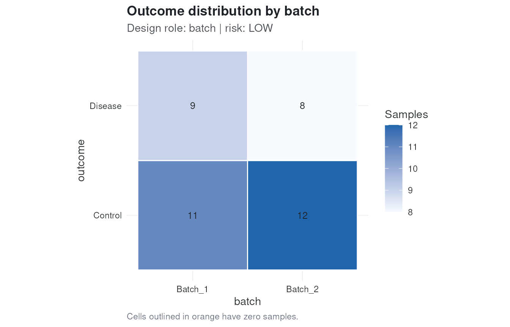
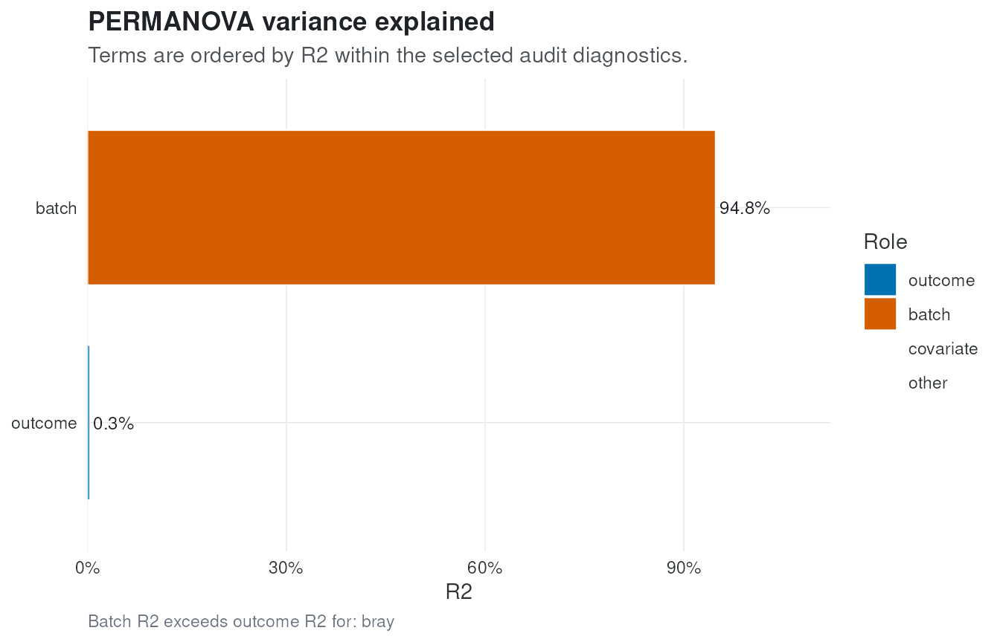

Auditing microbiome study designs with safebiome
Francesc Catala-Moll
IrsiCaixa AIDS Research InstituteSource:
vignettes/safebiome.Rmd
safebiome.RmdWhy Audit Microbiome Studies?
Microbiome analyses are sensitive to study design. Outcome groups can be confounded with center, sequencing run, extraction kit, visit, or subject identity. When this happens, downstream analyses can report biological differences that are partly or entirely driven by technical or design structure.
safebiome audits those risks before analysis. It does
not automatically correct counts or decide the final model. Instead, it
returns diagnostics, warnings, plots, and analysis-plan recommendations
that help make the study design explicit.
Load the Toy Dataset
library(safebiome)
data("toy_biome")
toy_biome
#> class: SummarizedExperiment
#> dim: 50 40
#> metadata(0):
#> assays(1): counts
#> rownames(50): Taxon_001 Taxon_002 ... Taxon_049 Taxon_050
#> rowData names(0):
#> colnames(40): S01 S02 ... S39 S40
#> colData names(3): sample_id outcome batchThe example dataset is a small simulated
SummarizedExperiment with count data and sample
metadata.
head(SummarizedExperiment::colData(toy_biome))
#> DataFrame with 6 rows and 3 columns
#> sample_id outcome batch
#> <character> <character> <character>
#> S01 S01 Control Batch_1
#> S02 S02 Control Batch_1
#> S03 S03 Control Batch_1
#> S04 S04 Disease Batch_1
#> S05 S05 Control Batch_1
#> S06 S06 Disease Batch_1Run the Audit
For examples and vignettes we use a small number of permutations.
Real analyses should generally use a larger value, such as the default
999.
audit <- check_biome(
toy_biome,
outcome = "outcome",
batch = "batch",
distances = "bray",
n_perm = 99,
verbose = FALSE
)
summary(audit)
#>
#> ── safebiome audit ─────────────────────────────────────────────────────────────
#> ℹ Overall risk: HIGH
#>
#> ── Main warnings ──
#>
#> • Batch audit for bray distance has high risk (batch R2 = 0.948; PERMANOVA =
#> high, dispersion = low, PCoA = high).
#>
#> ── Recommended next steps ──
#>
#> • Batch signal is strong relative to outcome or ordination structure; report
#> batch diagnostics before downstream analysis.
#> • Avoid interpreting outcome effects without sensitivity analyses that account
#> for batch.
#> • Batch adjustment appears statistically identifiable based on metadata
#> diagnostics.
#> • Overall leakage risk is low.
#> • No subject variable provided; repeated-measure leakage was not evaluated.
#> • Batch variables appear balanced enough for standard validation.
#> • No time variable provided; temporal leakage was not evaluated.Interpret Design Risk
The design module checks whether metadata variables are associated with the outcome. For categorical variables it stores a contingency table, Cramer’s V, empty-cell counts, and a conservative risk label.
audit$design[, c(
"variable",
"role",
"variable_type",
"effect_size_name",
"effect_size",
"empty_cells",
"risk"
)]
#> variable role variable_type effect_size_name effect_size empty_cells risk
#> 1 batch batch categorical cramers_v 0.05057217 0 lowplot_design() shows the outcome distribution across an
audited categorical variable. Empty cells are outlined because they can
indicate confounding or complete separation.
plot_design(audit, variable = "batch")
Interpret Correction Feasibility
Batch adjustment is only meaningful when outcome and batch are not perfectly aliased. The correction module summarizes whether ordinary adjustment appears identifiable from the metadata.
audit$correction$feasibility
#> [1] "safe"
audit$correction$recommendations
#> [1] "Batch adjustment appears statistically identifiable based on metadata diagnostics."This diagnostic is not a command to correct the data. It is a warning about what kinds of downstream adjustment are statistically defensible.
Interpret Batch Risk
The batch module combines distance-based PERMANOVA, dispersion diagnostics, and ordination-axis association checks. The summary table reports how much microbiome variation is attributed to the outcome and to batch.
audit$batch$summary[, c(
"distance",
"outcome_r2",
"batch_r2",
"batch_dominance_score",
"permanova_risk",
"permdisp_risk",
"pcoa_risk",
"risk"
)]
#> distance outcome_r2 batch_r2 batch_dominance_score permanova_risk
#> 1 bray 0.003494571 0.9477919 271.2184 high
#> permdisp_risk pcoa_risk risk
#> 1 low high highplot_variance() visualizes the PERMANOVA R2 terms. A
batch term that exceeds the outcome term is a strong signal that the
downstream analysis needs explicit batch sensitivity checks.
plot_variance(audit, distance = "bray")
Interpret Leakage Risk
Validation leakage can occur when samples from the same subject,
batch, or time structure are split across train and test folds in a way
that makes prediction look better than it is. safebiome
reports the recommended cross-validation scheme based on the metadata
supplied to check_biome().
audit$leakage$recommended_cv
#> [1] "standard_cv"
audit$leakage$recommendations
#> [1] "Overall leakage risk is low."
#> [2] "No subject variable provided; repeated-measure leakage was not evaluated."
#> [3] "Batch variables appear balanced enough for standard validation."
#> [4] "No time variable provided; temporal leakage was not evaluated."Generate an Analysis Plan
plan_analysis() translates the audit into recommended
formulas, validation schemes, batch strategy, and sensitivity
analyses.
plan_analysis(audit)
#>
#> ── safebiome analysis plan ─────────────────────────────────────────────────────
#> ℹ Overall risk: HIGH
#>
#> ── Recommended formulas ──
#>
#> • Differential abundance: `~ outcome + batch`
#> • PERMANOVA: `distance ~ outcome + batch`
#>
#> ── Validation ──
#>
#> • standard_cv: Standard cross-validation is acceptable for the supplied leakage
#> variables.
#>
#> ── Batch strategy ──
#>
#> • sensitivity_required: Batch explains substantial microbiome variation; report
#> analyses with explicit batch sensitivity checks.
#>
#> ── Sensitivity analyses ──
#>
#> • Repeat microbiome association analyses with and without batch terms where
#> identifiable.
#> • Report distance-specific PERMANOVA results and batch R2 alongside outcome R2.
#>
#> ── Warnings ──
#>
#> ! Batch audit for bray distance has high risk (batch R2 = 0.948; PERMANOVA = high, dispersion = low, PCoA = high).
#> ! Batch-dominated microbiome signal requires explicit sensitivity analysis.The plan should be read as a structured starting point. Analysts still need to choose methods appropriate for their scientific question, data distribution, and experimental design.
Session Information
sessionInfo()
#> R version 4.5.2 (2025-10-31)
#> Platform: x86_64-pc-linux-gnu
#> Running under: Ubuntu 24.04.3 LTS
#>
#> Matrix products: default
#> BLAS: /usr/lib/x86_64-linux-gnu/openblas-pthread/libblas.so.3
#> LAPACK: /usr/lib/x86_64-linux-gnu/openblas-pthread/libopenblasp-r0.3.26.so; LAPACK version 3.12.0
#>
#> locale:
#> [1] LC_CTYPE=en_US.UTF-8 LC_NUMERIC=C
#> [3] LC_TIME=en_US.UTF-8 LC_COLLATE=en_US.UTF-8
#> [5] LC_MONETARY=en_US.UTF-8 LC_MESSAGES=en_US.UTF-8
#> [7] LC_PAPER=en_US.UTF-8 LC_NAME=C
#> [9] LC_ADDRESS=C LC_TELEPHONE=C
#> [11] LC_MEASUREMENT=en_US.UTF-8 LC_IDENTIFICATION=C
#>
#> time zone: UTC
#> tzcode source: system (glibc)
#>
#> attached base packages:
#> [1] stats graphics grDevices utils datasets methods base
#>
#> other attached packages:
#> [1] safebiome_0.99.0 BiocStyle_2.38.0
#>
#> loaded via a namespace (and not attached):
#> [1] SummarizedExperiment_1.40.0 gtable_0.3.6
#> [3] xfun_0.57 bslib_0.10.0
#> [5] ggplot2_4.0.3 htmlwidgets_1.6.4
#> [7] Biobase_2.70.0 lattice_0.22-9
#> [9] vctrs_0.7.3 tools_4.5.2
#> [11] generics_0.1.4 stats4_4.5.2
#> [13] parallel_4.5.2 tibble_3.3.1
#> [15] cluster_2.1.8.2 pkgconfig_2.0.3
#> [17] Matrix_1.7-5 RColorBrewer_1.1-3
#> [19] S7_0.2.2 desc_1.4.3
#> [21] S4Vectors_0.48.1 lifecycle_1.0.5
#> [23] compiler_4.5.2 farver_2.1.2
#> [25] textshaping_1.0.5 Seqinfo_1.0.0
#> [27] permute_0.9-10 htmltools_0.5.9
#> [29] sass_0.4.10 yaml_2.3.12
#> [31] pkgdown_2.2.0.9000 pillar_1.11.1
#> [33] jquerylib_0.1.4 MASS_7.3-65
#> [35] DelayedArray_0.36.1 cachem_1.1.0
#> [37] vegan_2.7-3 abind_1.4-8
#> [39] nlme_3.1-169 tidyselect_1.2.1
#> [41] digest_0.6.39 dplyr_1.2.1
#> [43] bookdown_0.46 labeling_0.4.3
#> [45] splines_4.5.2 fastmap_1.2.0
#> [47] grid_4.5.2 cli_3.6.6
#> [49] SparseArray_1.10.10 magrittr_2.0.5
#> [51] S4Arrays_1.10.1 withr_3.0.2
#> [53] scales_1.4.0 rmarkdown_2.31
#> [55] XVector_0.50.0 matrixStats_1.5.0
#> [57] otel_0.2.0 ragg_1.5.2
#> [59] evaluate_1.0.5 knitr_1.51
#> [61] GenomicRanges_1.62.1 IRanges_2.44.0
#> [63] mgcv_1.9-4 rlang_1.2.0
#> [65] glue_1.8.1 BiocManager_1.30.27
#> [67] BiocGenerics_0.56.0 jsonlite_2.0.0
#> [69] R6_2.6.1 MatrixGenerics_1.22.0
#> [71] systemfonts_1.3.2 fs_2.1.0